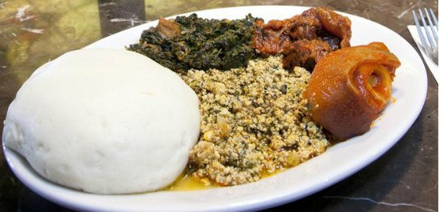

We take inspiration from the World’s best cuisines, and create a unique fusion experience. Our lipsmacking creations will tickle your culinary senses!
© Eddy_Hommerd_2020 | created with BootStrap 4.1
Take a look at each meal refering to their Origins and countries. Please click on each meals to get an history.
